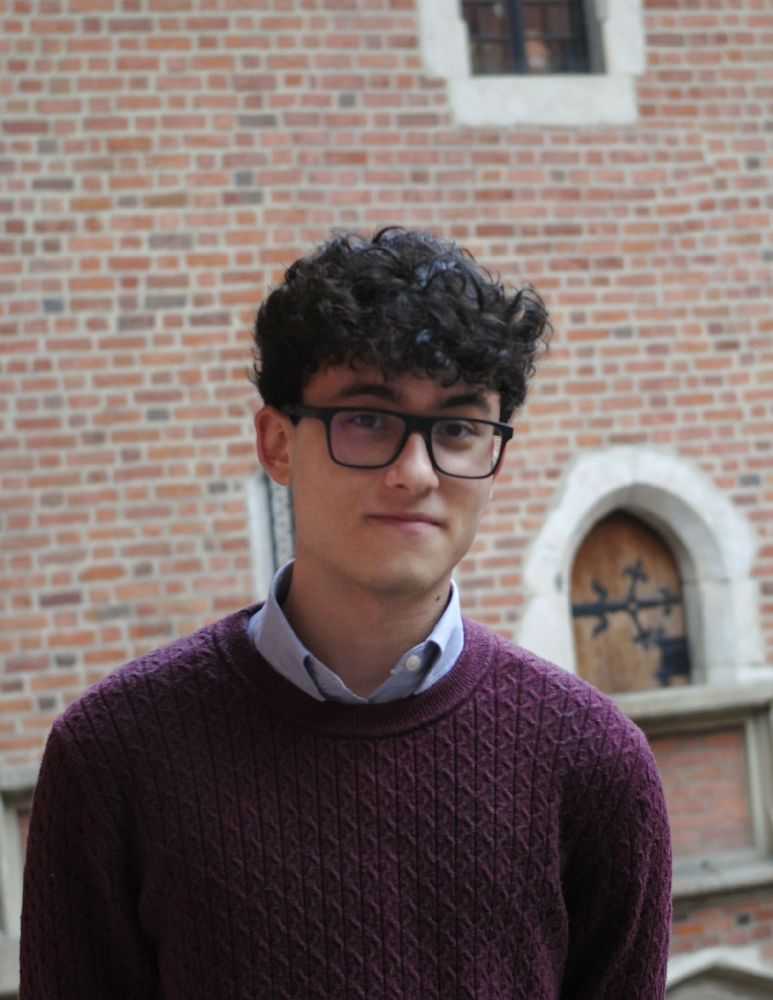

Assessing the European Security Response to the Scaling Back of American Support for Ukraine
An analysis of European security adaptation amid changes in the level of American support for Ukraine during the second Trump administration.
International Relations student at the University of São Paulo, interested in European security, international political economy, and political and regulatory risk.

I am an eighth-semester International Relations student at the University of São Paulo (USP) and a Government Relations Intern. I value curiosity, continuous learning, and approaching challenges with discipline and analytical rigor.
My academic and professional interests lie at the intersection of international affairs, political analysis, international political economy, and political and regulatory risk.
I am also a member of the Laboratório de Análise Internacional Bertha Lutz (LAI-USP), where I have worked with international-affairs writing, institutional communication, and the USP-OAS Electoral Bulletin.
A growing collection of academic and independent writing on international affairs, geopolitics and political risk.
An analysis of European security adaptation amid changes in the level of American support for Ukraine during the second Trump administration.
An analysis of the 2024 U.S. presidential race amid the Biden-Trump rematch, the June debate, the assassination attempt against Trump and Biden's withdrawal.
An analysis of Argentina's 2023 primary elections and the performances of Sergio Massa, Patricia Bullrich, Horacio Rodríguez Larreta and Javier Milei.
A forthcoming analysis of Brazil’s 2026 elections, exploring the results, electoral dynamics and their implications for the country’s political landscape.
An analysis of the 2024 U.S. presidential race amid the Biden-Trump rematch, the June debate, the assassination attempt against Trump and Biden's withdrawal.
The article examines the unexpected shifts that reshaped the race in the weeks before the 2024 election, from the debate and the assassination attempt to Biden's withdrawal and Kamala Harris's emergence as the Democratic nominee.
Read the full article: Biden Fora, Trump Quase →
Areas that currently shape my academic and professional work.
European security, NATO, Russia, Ukraine, and the transatlantic relationship.
Political institutions, electoral dynamics, campaigns, and the interaction between politics and policy.
Security, politics and institutional change in Central and Eastern Europe.
The interaction between political developments, economic policy and international institutions.
European integration, economic governance and EU external relations.
Political and regulatory developments and their implications for organizations and markets.
Selected academic and professional experience.
Academic work focused on Russian foreign and security policy, European security, Central and Eastern European politics, Russian society and European monetary and economic policy.
International Relations undergraduate studies.
A concise overview of my academic background, professional experience and research interests.
For a detailed overview of my education, experience, skills and languages.
For research, professional opportunities and conversations related to international affairs, geopolitics and political risk.